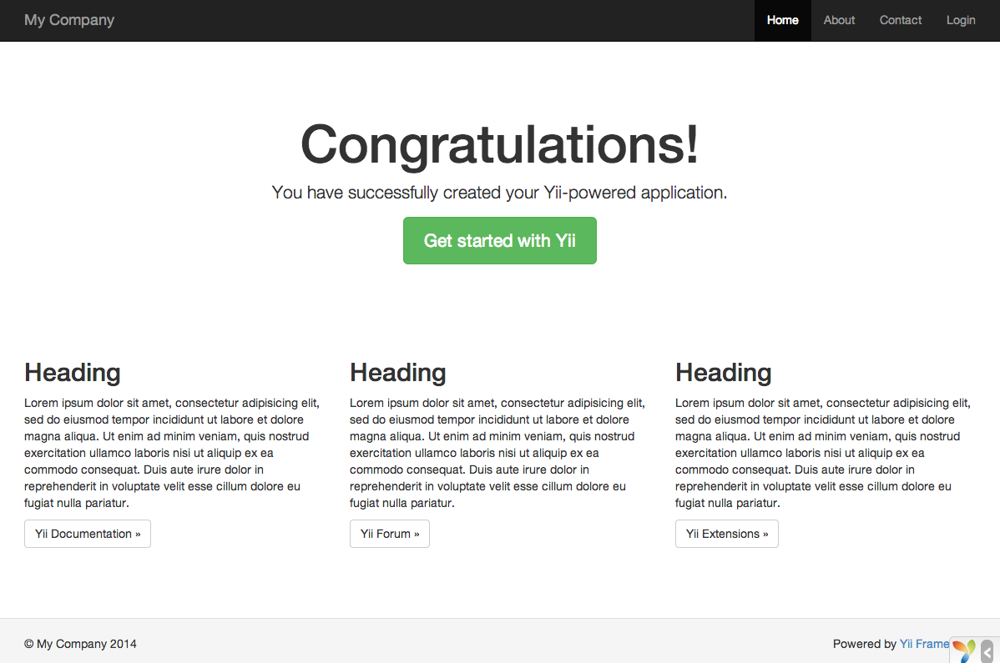

Installing Yii ¶
You can install Yii in two ways, using the Composer package manager or by downloading an archive file. The former is the preferred way, as it allows you to install new extensions or update Yii by simply running a single command.
Standard installations of Yii result in both the framework and a project template being downloaded and installed. A project template is a working Yii project implementing some basic features, such as login, contact form, etc. Its code is organized in a recommended way. Therefore, it can serve as a good starting point for your projects.
In this and the next few sections, we will describe how to install Yii with the so-called Basic Project Template and how to implement new features on top of this template. Yii also provides another template called the Advanced Project Template which is better used in a team development environment to develop applications with multiple tiers.
Info: The Basic Project Template is suitable for developing 90 percent of Web applications. It differs from the Advanced Project Template mainly in how their code is organized. If you are new to Yii, we strongly recommend you stick to the Basic Project Template for its simplicity yet sufficient functionalities.
Installing via Composer ¶
Installing Composer ¶
If you do not already have Composer installed, you may do so by following the instructions at getcomposer.org. On Linux and Mac OS X, you'll run the following commands:
curl -sS https://getcomposer.org/installer | php
mv composer.phar /usr/local/bin/composer
On Windows, you'll download and run Composer-Setup.exe.
Please refer to the Troubleshooting section of the Composer Documentation if you encounter any problems. If you are new to Composer, we also recommend to read at least the Basic usage section of the Composer documentation.
In this guide all composer commands assume you have installed composer globally
so that it is available as the composer command. If you are using the composer.phar in the local directory instead,
you have to adjust the example commands accordingly.
If you had Composer already installed before, make sure you use an up to date version. You can update Composer
by running composer self-update.
Note: During the installation of Yii, Composer will need to request a lot of information from the Github API. The number of requests depends on the number of dependencies your application has and may be bigger than the Github API rate limit. If you hit this limit, Composer may ask for your Github login credentials to obtain a Github API access token. On fast connections you may hit this limit earlier than Composer can handle so we recommend to configure the access token before installing Yii. Please refer to the Composer documentation about Github API tokens for instructions on how to do this.
Installing Yii ¶
With Composer installed, you can install Yii by running the following commands under a Web-accessible folder:
composer global require "fxp/composer-asset-plugin:^1.2.0"
composer create-project --prefer-dist yiisoft/yii2-app-basic basic
The first command installs the composer asset plugin
which allows managing bower and npm package dependencies through Composer. You only need to run this command
once for all. The second command installs the latest stable version of Yii in a directory named basic.
You can choose a different directory name if you want.
Info: If the
composer create-projectcommand fails make sure you have the composer asset plugin installed correctly. You can do that by runningcomposer global show, which should contain an entryfxp/composer-asset-plugin. You may also refer to the Troubleshooting section of the Composer Documentation for common errors. When you have fixed the error, you can resume the aborted installation by runningcomposer updateinside of thebasicdirectory.
Tip: If you want to install the latest development version of Yii, you may use the following command instead, which adds a stability option:
composer create-project --prefer-dist --stability=dev yiisoft/yii2-app-basic basicNote that the development version of Yii should not be used for production as it may break your running code.
Installing from an Archive File ¶
Installing Yii from an archive file involves three steps:
- Download the archive file from yiiframework.com.
- Unpack the downloaded file to a Web-accessible folder.
Modify the
config/web.phpfile by entering a secret key for thecookieValidationKeyconfiguration item (this is done automatically if you are installing Yii using Composer):// !!! insert a secret key in the following (if it is empty) - this is required by cookie validation 'cookieValidationKey' => 'enter your secret key here',
Other Installation Options ¶
The above installation instructions show how to install Yii, which also creates a basic Web application that works out of the box. This approach is a good starting point for most projects, either small or big. It is especially suitable if you just start learning Yii.
But there are other installation options available:
- If you only want to install the core framework and would like to build an entire application from scratch, you may follow the instructions as explained in Building Application from Scratch.
- If you want to start with a more sophisticated application, better suited to team development environments, you may consider installing the Advanced Project Template.
Verifying the Installation ¶
After installation is done, either configure your web server (see next section) or use the
built-in PHP web server by running the following
console command while in the project web directory:
php yii serve
Note: By default the HTTP-server will listen to port 8080. However if that port is already in use or you wish to serve multiple applications this way, you might want to specify what port to use. Just add the --port argument:
php yii serve --port=8888
You can use your browser to access the installed Yii application with the following URL:
http://localhost:8080/

You should see the above "Congratulations!" page in your browser. If not, please check if your PHP installation satisfies Yii's requirements. You can check if the minimum requirements are met using one of the following approaches:
- Copy
/requirements.phpto/web/requirements.phpand then use a browser to access it viahttp://localhost/requirements.php Run the following commands:
cd basic php requirements.php
You should configure your PHP installation so that it meets the minimum requirements of Yii. Most importantly, you
should have PHP 5.4 or above. You should also install the PDO PHP Extension
and a corresponding database driver (such as pdo_mysql for MySQL databases), if your application needs a database.
Configuring Web Servers ¶
Info: You may skip this subsection for now if you are just test driving Yii with no intention of deploying it to a production server.
The application installed according to the above instructions should work out of box with either an Apache HTTP server or an Nginx HTTP server, on Windows, Mac OS X, or Linux running PHP 5.4 or higher. Yii 2.0 is also compatible with facebook's HHVM. However, there are some edge cases where HHVM behaves different than native PHP, so you have to take some extra care when using HHVM.
On a production server, you may want to configure your Web server so that the application can be accessed
via the URL http://www.example.com/index.php instead of http://www.example.com/basic/web/index.php. Such configuration
requires pointing the document root of your Web server to the basic/web folder. You may also
want to hide index.php from the URL, as described in the Routing and URL Creation section.
In this subsection, you'll learn how to configure your Apache or Nginx server to achieve these goals.
Info: By setting
basic/webas the document root, you also prevent end users from accessing your private application code and sensitive data files that are stored in the sibling directories ofbasic/web. Denying access to those other folders is a security improvement.
Info: If your application will run in a shared hosting environment where you do not have permission to modify its Web server configuration, you may still adjust the structure of your application for better security. Please refer to the Shared Hosting Environment section for more details.
Recommended Apache Configuration ¶
Use the following configuration in Apache's httpd.conf file or within a virtual host configuration. Note that you
should replace path/to/basic/web with the actual path for basic/web.
# Set document root to be "basic/web"
DocumentRoot "path/to/basic/web"
<Directory "path/to/basic/web">
# use mod_rewrite for pretty URL support
RewriteEngine on
# If a directory or a file exists, use the request directly
RewriteCond %{REQUEST_FILENAME} !-f
RewriteCond %{REQUEST_FILENAME} !-d
# Otherwise forward the request to index.php
RewriteRule . index.php
# ...other settings...
</Directory>
Recommended Nginx Configuration ¶
To use Nginx, you should install PHP as an FPM SAPI.
You may use the following Nginx configuration, replacing path/to/basic/web with the actual path for
basic/web and mysite.local with the actual hostname to serve.
server {
charset utf-8;
client_max_body_size 128M;
listen 80; ## listen for ipv4
#listen [::]:80 default_server ipv6only=on; ## listen for ipv6
server_name mysite.local;
root /path/to/basic/web;
index index.php;
access_log /path/to/basic/log/access.log;
error_log /path/to/basic/log/error.log;
location / {
# Redirect everything that isn't a real file to index.php
try_files $uri $uri/ /index.php$is_args$args;
}
# uncomment to avoid processing of calls to non-existing static files by Yii
#location ~ \.(js|css|png|jpg|gif|swf|ico|pdf|mov|fla|zip|rar)$ {
# try_files $uri =404;
#}
#error_page 404 /404.html;
# deny accessing php files for the /assets directory
location ~ ^/assets/.*\.php$ {
deny all;
}
location ~ \.php$ {
include fastcgi_params;
fastcgi_param SCRIPT_FILENAME $document_root$fastcgi_script_name;
fastcgi_pass 127.0.0.1:9000;
#fastcgi_pass unix:/var/run/php5-fpm.sock;
try_files $uri =404;
}
location ~* /\. {
deny all;
}
}
When using this configuration, you should also set cgi.fix_pathinfo=0 in the php.ini file
in order to avoid many unnecessary system stat() calls.
Also note that when running an HTTPS server, you need to add fastcgi_param HTTPS on; so that Yii
can properly detect if a connection is secure.